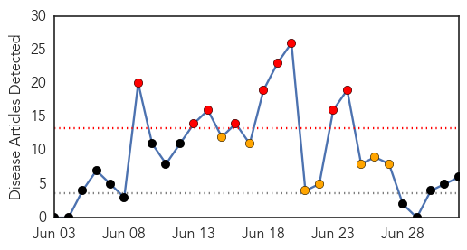
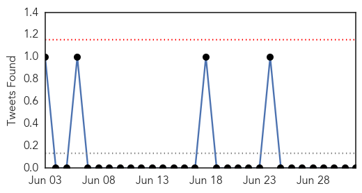
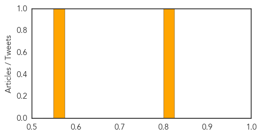

Chikungunya
30-Day Web Trend
9 alerts, 7 warnings

30-Day Twitter Trend
1 alerts, 0 warnings

Article Locations

Article Confidences

Top Articles:
- 0.999
- Sharp rise of chikungunya virus cases in the Caribbean
- 0.998
- Cayman's first chikungunya case confirmed
- 0.996
- W.Va.’s 1st case of mosquito-borne chikungunya confirmed
- 0.993
- News Scan for Jul 02, 2014
- 0.943
- First chikungunya case confirmed in Pinellas
- 0.531
- Chikungunya in Dominican Republic sickens Michigan teacher
Top Tweets:
-
No tweets found for Jul 02, 2014
Cholera
30-Day Web Trend
0 alerts, 0 warnings

30-Day Twitter Trend
0 alerts, 0 warnings

Article Locations

Article Confidences
Top Articles:
Top Tweets:
-
No tweets found for Jul 02, 2014